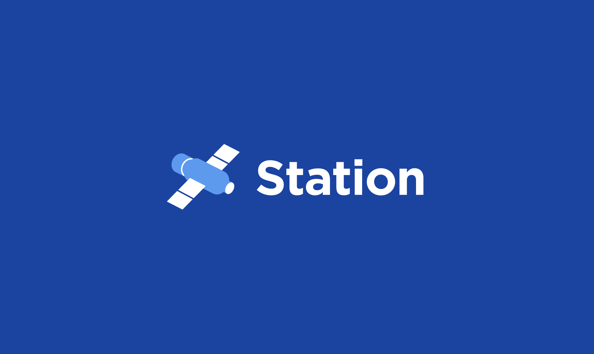

No Code Website Builder
Terra Station (officially rebranded as "Station") is the official non-custodial cryptocurrency wallet and dashboard designed for the Terra ecosystem. Originally built for the original Terra blockchain, it has evolved into a robust, multi-chain Web3 portal. It allows users to safely store crypto assets, manage portfolios, stake tokens to earn rewards, vote on governance proposals, and interact with decentralized applications (dApps).
Because Station is non-custodial, you maintain complete ownership of your digital assets. The wallet does not hold your funds or store your private keys on centralized servers. Instead, your keys are encrypted and stored locally on your device. This ensures that as long as you protect your secret seed phrase, no third party can freeze, access, or mismanage your funds.
The Multi-Chain Evolution
Following the structural shifts in the Terra network, Station adapted to support multiple ecosystems simultaneously. Today, it connects seamlessly to:
Terra 2.0 (LUNA): The modern, utility-focused mainnet ecosystem.
Terra Classic (LUNC/USTC): The legacy blockchain network maintained by a decentralized community.
The Cosmos Interchain: Over 30 networks utilizing Inter-Blockchain Communication (IBC), allowing users to manage assets across multiple blockchains from a single application interface.
How Terra Station Works
Terra Station bridge the gap between users and blockchain code. It functions through a combination of local security protocols, public ledger indexing, and user-friendly visual interfaces.
1. The Core Infrastructure (Keys and Public Addresses)
When you set up Station, the software uses cryptographic algorithms to generate two essential items:
The Private Key (Seed Phrase): A unique 24-word sequence that acts as your digital signature. It is required to approve transfers, staking commands, or smart contract interactions.
The Public Address: Your visible blockchain identity (e.g., terra1...). This acts like an email address or bank account number, allowing others to send tokens to your wallet.
When you open your dashboard, Station acts as a window to the blockchain. It scans public ledgers for your specific public address, compiles your token balances, and presents them in a unified visual dashboard.
[Your 24-Word Seed Phrase] ➔ Generates Private Key ➔ Creates Public Address (Receiving Info) ➔ Station Displays Ledger Balance
2. The User Interfaces (Form Factors)
To fit different user workflows, Station operates across three distinct layouts:
Browser Extension: Available for Chrome, Brave, Edge, and Firefox. It runs quietly in the background and acts as a web companion. When you visit a Web3 website or decentralized exchange, the extension pops up to let you securely authorize transactions.
Mobile App: Available on iOS and Android. It utilizes biometric security (FaceID/Fingerprint) and features an embedded dApp browser, letting you access crypto tools on the go.
Desktop Client: A standalone installation for Windows, macOS, and Linux, offering maximum stability and deep analytical readouts for advanced users.
Operating Terra Station: A Step-by-Step Guide
Working with Station involves four core operational pillars: wallet creation, funding, asset management, and ecosystem interaction.
Phase 1: Secure Wallet Setup
To begin using the platform safely, follow this structural initialization sequence:
Download: Install the official app or extension from the authorized website (station.money).
Generate Wallet: Open the app, click New Wallet, and establish a distinct wallet name and a strong local password.
Write Down the Seed Phrase: The app will display your unique 24-word seed phrase. Write this down on physical paper. Never save it digitally, take a screenshot, or upload it to cloud storage.
Verify: Confirm the phrase by selecting the requested words in the correct order to finalize activation.
Phase 2: Funding Your Account
To interact with decentralized apps or stake assets, you must load tokens into your wallet:
Open your Station dashboard and look at the top of the interface to locate your public address.
Click the Copy icon next to the address string.
Paste this address into the withdrawal field of a centralized exchange (like Binance or Kraken) or an external Web3 bridge to route your purchased LUNA, LUNC, or Cosmos assets directly into your personal custody.
Phase 3: Staking and Earning Rewards
One of Station's most popular features is its native delegation dashboard, which lets you earn passive yield while securing the network.
[Available Balance] ➔ Select Trusted Validator ➔ Delegate (Bond) Tokens ➔ Accumulate Passive Staking Rewards
Navigate to Stake: Open the Stake menu on the sidebar to view a directory of active network validators.
Analyze Validators: Compare nodes based on voting power, uptime history, and commission rates (the fee the validator takes from your earnings).
Delegate: Select a validator, click Delegate, enter the number of tokens you wish to commit, and sign the request with your password.
Collect Earnings: Your staking rewards accumulate in real time. You can return to this dashboard at any time to click Claim Rewards or reinvest them to compound your earnings.
Phase 4: Network Voting and Governance
Station acts as a direct link to decentralized governance. If you hold staked assets, you have the right to help steer the network:
Click the Governance tab to view active proposals. These can range from software upgrades to community pool spend requests.
Read the project descriptions and community arguments.
Click Vote, choose between Yes, No, No with Veto, or Abstain, and authorize the transaction.
Essential Security Practices
Because Station is completely self-directed, you are entirely responsible for protecting your wallet. Adhere to these rules to protect your digital assets:
Isolate with Hardware Wallets: For optimal security, connect your Station wallet to a physical hardware device like a Ledger. Your private keys will remain entirely offline inside the hardware chip, and transactions can only execute when you physically press the buttons on your device.
Beware of Phishing Links: Malicious actors frequently create fake browser extensions or clone websites to steal seed phrases. Never enter your 24 words into any website, form, or troubleshooting application.
Understand Unbonding Periods: When you stake tokens via Station, they are securely locked. If you decide to unstake ("unbond") them to sell or move them, the network enforces a mandatory waiting period (typically 21 days) during which your funds cannot be moved or traded.
Summary of Benefits
Terra Station simplifies decentralized web access by packing complex blockchain utilities into an organized dashboard. By mastering its core features—secure asset storage, native token staking, multi-chain swapping, and decentralized governance voting—you can navigate the modern interchain ecosystem safely and efficiently.
No Code Website Builder